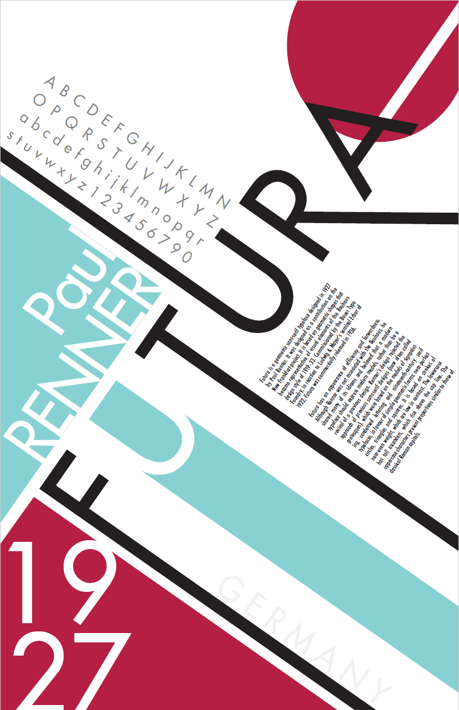

Futura Typeface Hierarchy
Role: 51-261 Communication Design Fundamentals | Class Project
Time Period: 9/24 - 10/6 (Two Weeks)
Final Product
This project was for me to explore one selected typeface (futura) and see how line spacing, scale, and other typeface variables synthesize together.
ProcessBelow you can see the various exercises that led to the final product.
Typeface TracingThe first part of the assignment was to trace 4 different typefaces: Adobe Garamond, Didot, Helvetica, and Futura. This was to help me identify the differences between each fonts as well as the differences between sans serif and serif fonts. Furthermore, the tracing helped me notice how each letter is constructed. Below is a snapshot of my tracings.
 Typographic Voice
Typographic Voice
The next exercise was for me to experiment and explore how the choice of typeface affects the meaning of a certain word. I chose the word "melancholy,"" and I used played around with various fonts, and I ended up with about 5 that I am somewhat satisfied with: Bodoni (poster compressed), Century Gothic, Segoe UI, Microsoft Himalaya, and Lane Narrow.


Typographic Hierarchy Research
Below is some of the research that I gathered for the poster
Typeface: Futura
Name of Designer: Paul Renner
Year Designed: 1927
"Futura is a geometric sans-serif typeface designed in 1927 by Paul Renner. It was designed as a contribution on the New Frankfurt-project. It is based on geometric shapes that became representative of visual elements of the Bauhaus design style of 1919-33. Commissioned by the Bauer Type Foundry, in reaction to Ludwig & Mayer's seminal Erbar of 1922, Futura was commercially released in 1936.
Futura has an appearance of efficiency and forwardness. Although Renner was not associated with the Bauhaus, he shared many of its idioms and believed that a modern typeface should express modern models, rather than be a revival of a previous design. Renner'’'s design rejected the approach of previous sans-serif designs (now often called grotesques), which were based on the models of signpainting, condensed lettering and nineteenth-century serif typefaces, in favour of simple geometric forms: near-perfect circles, triangles and squares. It is based on strokes of near-even weight, which are low in contrast. The lowercase has tall ascenders, which rise above the cap line. The uppercase characters present proportions similar to those of classical Roman capitals." Source: Wikipedia
Full Character Set

{kind=link}
Quote
"Here men from the planet Earth first set foot upon the Moon July 1969, A.D. We came in peace for all Mankind" Source: Wikipedia